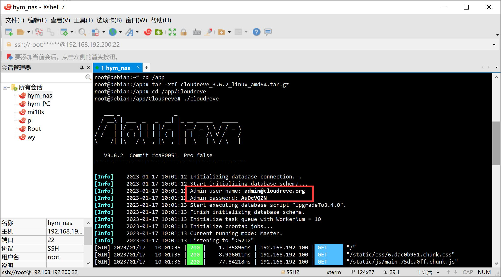
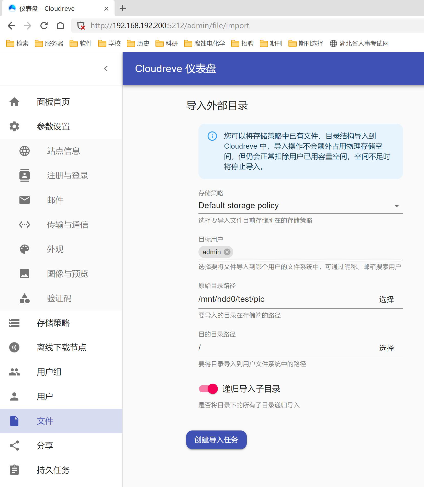
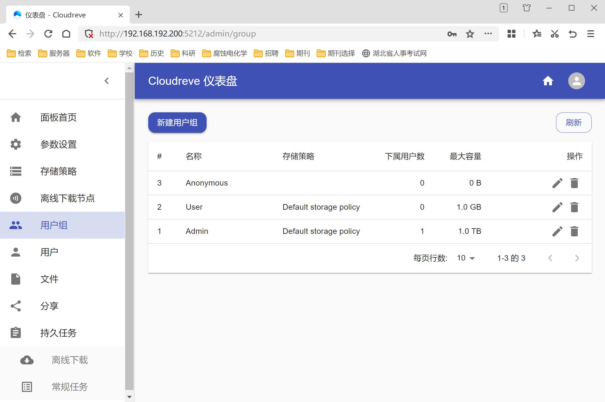

云存储解决方案
本文介绍笔者的云音频、图片、视频、笔记和文档的解决方案
目录
云音频方案-Private Cloud Music
优点：简单粗暴，无数据库，适合以文件夹给音乐分组的人，基于php兼容性好，MIT开源协议可以随便魔改
缺点：原版界面略丑
在仓库Private-Cloud-Music下载解压后放在php服务器里，搭建服务器方法参考搭建Web服务器
在Windows下可创建软连接到目标目录
1 | mklink /d "D:\tools\phpstudy_pro\WWW\mu\新录" "D:\Store\Lib\music\N" |
在Linux下可创建链接到目标目录，亲测root用户目录下的文件不可读
1 | ln /file/music/C1 /var/www/html/mu/国语1 -s |
{kind=link}
云图片方案-Piwigo
优点：速度很快，免费无限制，支持添加本地文件夹，主题和插件丰富
缺点：老外开发，主题审美掉线
下载解压到http服务器目录即可
如果在设置中禁用了菜单，打开管理页面即可
云IDE方案-Code Server
安装完毕建议直接安装中文包并关闭自动保存(看个人习惯)
直接下载最新版本
本人试过npm安装，头都大了也没搞出来
1 | ./code-server |
启动成功后可修改配置文件
1 | nano ~/.config/code-server/config.yaml |
如果需要反向代理，必须使用nginx
1 | location /cs/ { |
云文档方案
暂时用不上，
备用方案
标*的软件使用见第六章
音频备用方案
由于本人不喜欢数据库方式，所以优选了无数据库的Private Cloud Music方案，下列方案可随意尝试
Navidrome：文件分组复杂，配置繁琐，界面较反人类
mStream方案：内建数据库，未测试
Airsonic:基于Mysql
Ampache:基于Mysql
Koel:基于Mysql
图库备用方案
*Pichome:UI审美在线，使用本地文件和httpd
Photoview：不支持原生win，自带web端和服务器
LibrePhotos：不支持原生win
Photoprism：对设备更严格
Lychee：要求的php版本过于离谱
公共网盘备用方案
*Owncloud：依赖数据库
如何搭建自己的私有云盘
kiftd：基于java，不支持添加本地目录
ONLYOFFICE：协同办公
zfile：SQL数据库
Veno File Manager：无数据库网盘
Dzzoffice在线协作办公：需要数据库
Kodbox：可道云
云笔记备用方案
Trilium可以请求一战
觅思文档：Python写的，基于本地数据，记笔记比较友好
*Joplin：借助WebDev实现同步，只有客户端无网页版
Laverna：网页版无法存储本地数据
云IDE备用方案
附加内容
配置CloudReve
说明
优点：本来就是全功能网盘方案，自带数据库
缺点：缩略图功能丢失，导致不能预览图片；音频播放也蛋疼；可能是H5的锅，播放视频时可能丢失内嵌字幕
注意：千万别在管理界面删除文件，会一并删掉本地文件
获得文件
1 | tar -xzf cloudreve_3.6.2_linux_amd64.tar.gz |
{kind=link}

第一次启动后会显示管理员账号密码，请牢记打开http://192.168.192.200:5212/ 进行管理
{kind=link}

导入外部目录{kind=link}

为用户扩容配置Pichome
缺点：无游客帐号
不要打开Pichome的视频缩略图，不仅占用存储播放起来也很糊，源视频预览只能播放mp4，mkv不行，H265格式能不能播放取决于浏览器，字幕显示正常
注意，某些图片在win下无法预览，此类图片同样无法在Pichome中查看，图库可能重新扫描也无法解决问题，需要手动删除，单个图库不要搞太大，坏掉的话很头疼
下载后解压到web服务器目录
在站点设置中推荐模板2，此模板倾向于使用文件夹分类，本地存储中打开图片处理的GD库，在库中导入图片文件夹后刷新库即可，会在www\Pic\data\attachment\pichomethumb\某个id目录下生成缩略图，不过缩略图的生成和使用非常玄学
如果库扫描一半卡死的话，放那不管就行，很玄学
配置Joplin同步服务
下载客户端
创建WebDav服务器
假如WebDav服务器链接是http://192.168.192.200:88/webdav/ ，建议配置WebDav的时候创建一个joplin的文件夹，并给予服务器写权限，使用地址为http://192.168.192.200:88/webdav/joplin/ 进行同步